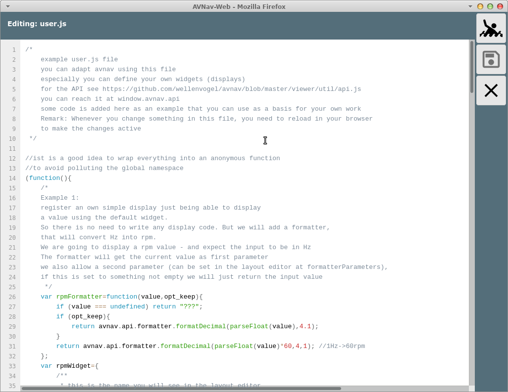

To adapt AvNav to your needs you can extend it with some java script code.
It is possible to define new data displays (widgets) to be placed using the layout editor. In principle you can run any java script code but you have to take care not to disturb the AvNav main functions.
The java script code has to be located at user.js in the directory
BASEDIR/user/viewer.
(e.g. on the pi BASEDIR is /home/pi/avnav/data).
To simplify working on the code you can directly access the files in this
directory via Files/Download page  , subpage
, subpage  .
.

In the screenshot you see a file user.js - initally created from a template on the first start of the server.
By clicking the file and selecting "Edit" from the dialog you can immediately start working on the file.

There are a couple of examples already included in the file. They
demonstrate some variants of new widgets. After editing use to store the file and reload AvNav to watch
your changes in action.
to store the file and reload AvNav to watch
your changes in action.
I would recommend to download and backup the file regularily after editing since there is no version control included in AvNav.
The current file template you can also find on github.
Basically you can add the following types of widgets:
The interface to communicate with AvNav is available at github and in the example code.
For an own widget the following functions/properties can be implemented:
| Name | Type | Usable for type | Description |
| name | String | all | the name of the widget as displayed in the layout editor |
| type | string (optional) |
alle | defines which type of widget should be created Values: radialGauge, linearGauge If you don't set the type either the default widget will be used (no renderHtml and no renderCanvas provided) or a special userWidget will be used. |
| renderHtml | function (optional) |
userWidget | This method must return a string containing valid HTML. It will be
injected into the widget. To attach event handlers to your elements
you have to register them (see initFunction). In the HTML you will
assign them with: <button onclick="myHandler">Click!</button>
Note that is is not exactly strict HTML as you only provide the name
of the event handler - no java script code! The "this" inside renderHtml refers to the widget context (an object that is specific for the particular widget). If the event handler is called, the "this" will also point to the context. The parameter of renderHtml contains all parameters of the widget and the values defined at storeKeys. The function will be called every time the values change. |
| renderCanvas |
function (optional) |
userWidget | With this function you can draw to the provided canvas object. The second parameter of renderCanvas contains all parameters of the widget and the values defined at storeKeys. The function will be called every time the values change. The "this" inside renderCanvas refers to the widget context (an object that is specific for the particular widget). |
| storeKeys |
object | all | You have to provide the data to be read from the internal store
serving as parameters for the renderXXX function. |
| caption | string (optional) |
all | A default caption. |
| unit | string (optional) |
alle | A default unit |
| formatter | function (optional) |
defaultWidget, radialGauge, linearGauge |
A formatter for the value. For the defaultWidget this function is mandatory. |
| translateFunction | function (optional) |
alle | This function is called with the current values as parameters and
must return an object containing the derived values. This may be used to transform values before rendering if no own renderXXX is implemented - see example. |
| initFunction | function (optional) |
userWidget | If defined, this function will be called once after creating the
widget before any renderXXX function. The widget context is provided
as a parameter and as the "this" variable. The widget context has an eventHandler Property. Here you have to define all event handlers to be used in your HTML code. With a triggerRedraw function that is also available at the context you can force a new rendering of the widget causing the renderXXX functions to be called again. Starting with version 20210422 the init function will receive a second parameter that has the properties of the widget (including all parameters that you defined as editable widget parameters). |
| finalizeFunktion | function (optional) |
userWidget | If defined, this function will be called before the widget is
removed. The "this" refers to the widget context. Additionally the
context will also provided as the first parameter (like in the
initFunction). Starting with version 20210422 the init function will receive a second parameter that has the properties of the widget (including all parameters that you defined as editable widget parameters). |
The following global variables are set for the java script code:
| Name | plugin.js/user.js | Decsription |
| AVNAV_BASE_URL | both | The URL to the directory from where the java script code has been
loaded. This can be used to load other elements from there. From
user.js you can access files from the images directory with
AVNAV_BASE_URL+"../images". AVNAV_BASE_URL+"/api" will give you the base URL for plugins to maintain communication with the python side. |
| AVNAV_PLUGIN_NAME | plugin.js | The name of the plugin. |
After defining a widget you need to register it at AvNav (avnav.registerWidget).
As a second parameter you can provide an object containing parameters to be displayed in the layout editor.
Examples can be found in the user.js
template. Values selected by the user in the Layout editor will
become part of the properties provided to the renderHtml and renderCanvas
functions (except for parameters of type KEY: the values read from the
store will be provided).
For each of the parameters you can provide the following properties:
| Name | Type | Description |
| key | The name of the parameter as to be displayed in the layout editor and as to be available for the renderXXX functions. | |
| type | string | STRING, NUMBER, KEY, SELECT, ARRAY, BOOLEAN, COLOR The type of the parameter. Depending on the type a different user dialog will be shown: for COLOR this will be a color selector, for SELECT a select list and for KEY the list of known items in the global store. For an array you can provide a list of values, separated by comma. |
| default | depending on type | The default value. For COLOR a color css property - like "rgba(200, 50, 50, .75)" |
| list | Array (only for type SELECT) |
An array of strings or objects {name:'xxx',value:'yyy'} - they will be displayed in the select list. |
There are some predefined parameters for the layout editor. For those no describing object with properties should be provided, just true or false (this defines whether or not they will be prompted in the layout editor).
Those are:
An example definition:
Beside the widgets you can implement your own formatters preparing values
for display.
Many formatters already are available in the system - see Layout
Editor.
Since version 20210106 you can register your own formatters in AvNav and,
by this, make them available to all other widgets. Basically a formatter
is a function accepting the value to be formatted as first parameter and
returning a string result.
The length of the string should be constant and independent from the
current value (use space padding if necessary). This is to avoid
interfering with automatic sizing on dashboard pages.
A formatter can accept additional parameters to control the output. Those parameters can be set with the widget property "formatterParameters" - typically in the Layout Editor.
Example:
registerFormatter will throw an exception if a formatter with the same name already exists.
Each formatter function should carry a "parameters" property. This property describes the values presented to the user in the layout editor as formatterParameters. The values in this definition follow the same syntax as for editable widget parameters.
Images and libaries uploaded to the same directory can be accessed by
your java script code. Images additionally can be accessed in the images  directory.
directory.
Embedding of libraries can be done like this:
I recommend to assign css classes to your own widgets so to provide easy means of adapting their look and feel later on by user defined CSS. You should not use HTML ids in your code as the widgets might be instantiated multiple times on one page.
If you need to download data from the server I recommend using fetch. All files in the user directory (or the plugin directory for plugin.js) can be accessed with AVNAV_BASE_URL+"/"+name.
If you need to create an additional file in the user directory (e.g. text or HTML) you can directly do this using the "+" button (lower right) - afterwards you can directly edit the file.
Since version 20210114 you can register functions to convert and format
data from overlay files for the "Feature Info" dialog.
You can implement them in the user.js or by a plugin.
With
you register such a function. For details refer to Overlays.